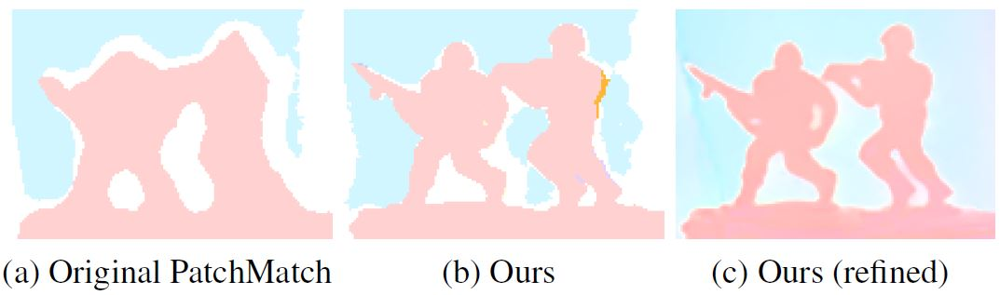
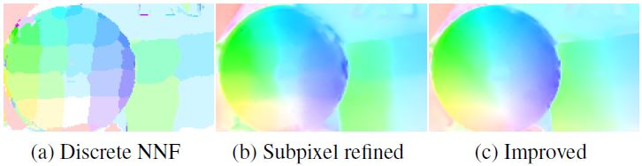

IEEE Conference on Computer
Vision and Pattern Recognition (CVPR), 2014
Fast Edge-Preserving
PatchMatch for Large Displacement Optical Flow
Abstract
We
present a fast optical flow algorithm that can handle large
displacement motions. Our algorithm is inspired by recent successes of
local methods in visual correspondence searching as well as approximate
nearest neighbor field algorithms. The main novelty is a fast
randomized edge-preserving approximate nearest neighbor field algorithm
which propagates self-similarity patterns in addition to offsets.
Experimental results on public optical flow benchmarks show that our
method is significantly faster than state-of-the-art methods without
compromising on quality, especially when scenes contain large motions.
Downloads
1.
Paper [PDF (5.4MB)]
2. Win32 CUDA Binary Executable (require CUDA-capable NVIDIA graphics card) [zip
(9.1MB) | README]
3. Win32 "flo" File Browser (GUI tool for visulizing flow results) [zip (4.6MB) | README | Middlebury "flo" format]
4. Supplementary Materials (more results) [PDF (23.5MB)]
5. Poster [PDF (0.8MB)]
6. Journal Extension (IEEE Trans. on Image Processing) [PDF (24MB) | low-res. PDF (740KB)] (new)
7. Matlab Mex code (require CUDA-capable NVIDIA graphics card, for Matlab R2013a/Win64) [mexw64 (2.5MB)] (new)
Motivation
We
use approximate nearest neighbor field (NNF) for large displacement
optical flow estimation in this work. NNF is a correspondence field
indicating pairs of image patches from two images which are closest in
terms of some patch distance. There is no limitation on the relative
distance between a pair of closest patches which makes NNF a good
source of information for handling large displacement motions. Although
exact NNF is computationally expensive to compute, there exist
efficient approximate algorithms, such as PatchMatch [1]. In order to
eliminate matching ambiguities, a large patch size is usually needed
for optical flow estimation. But increasing patch size leads to two
problems which are motion boundary preservation and algorithm speed. We
address the former problem by introducing a novel edge-preserving
version of PatchMatch and the latter one by developing a fast
approximate algorithm.
Edge-Preserving PatchMatch
Instead of
computing patch distance using Euclidean distance, we use the bilateral
weighted [2] patch distance when computing matching cost. When the
patch size is large, the advantage of using bilateral weighted patch
distance is obvious.

Fast Algorithm
Notice
that although PatchMatch is very fast for small patch size, it is
actually much slower when increasing patch size. Other choices of
computing NNF, like CSH [3] or KD-Tree based algorithm [4], cannot be
directly applied to bilateral weighted patch matching (actually,
CSH and KD-Tree based algorithm is not suitable for optical flow
estimation since their results is targeted on minimizing reconstruction
error and the NNF results are usually too messy). Our solution is,
using less pixels when computing patch distance in PatchMatch.
We
notice that, due to the range kernel employed in the bilateral weighted
patch distance, the major portion of the matching cost is contributed
by pixels that are similar to the center pixel. This suggests a natural
way to accelerate the matching cost computation which is that we simply
ignore dissimilar pixels to center pixel. We employ an additional
scheme similar to the idea of propagating offset in PatchMatch, which
is, propagating the selected pixels! Specifically, the algorithm is as
follows: for each pixel, we randomly select n pixels (n
is much smaller than the number of pixels inside the patch) from its
surrounding patch and store them into a vector in the order of their
similarity to the center pixel (namely, self-similarity vector);
then we scan the image from top-left to bottom-right, and, for each
pixel, merge its adjacent pixels’ vector into its own own vector
(according to the stored pixels’ similarity to current pixel);
reversely scan and merge. After obtaining all the self-similarity
vectors, we use the vector for computing NNF by PatchMatch algorithm.
See more details in the paper.
Besides,
in order to further
accelerate the algorithm, we compute the NNF in a downsampled version
of the original image and then use bilateral upsampling [5] with local
refinement to get the flow in original resolution. The downsampled
image should not be too small in order to capture fine scale details.
Pipeline
The NNF
computation is only the first step of optical flow estimation. Our
whole pipeline is as follows (similar to [6] except subpixel refinement)
Bi-directional
NNF -> Forward/Backward Consistency Check ->
Weighted Median Filtering -> Subpixel Refinement.
Our
subpixel refinement uses a 2D paraboloid surface fitting algorithm on a
higher resolution image (bicubic upsampled version of input image). See
the following results for an example. Notice that (c) is computed from
a higher resolution, while (b) is from the original resolution. In our
algorithm, their computational cost is the same (except the cost
of the bicubic upsampling of input image).

Performance
We
implemented our whole algorithm using CUDA and performed experiments on
a NVIDIA Geforce GTX 780 GPU. Our implementation can process a 640 x 480
image (0.3 Megapixel) in 0.2
seconds. The algorithm scales well with the size of the image. For
example, it can process a 1024 x 436 image (MPI Sintel data, 0.45
Megapixel) in 0.25 seconds.
Results on Benchmarks (shown as "EPPM")
We
evaluated our method on three benchmarks (see the following links).
Note that our method is much faster than the other top
performers.
1. MPI Sintel
2. KITTI
3. Middlebury (EPPM without downsampling)
Citation
@inproceedings{bao2014cvpreppm,
title={Fast Edge-Preserving PatchMatch for Large Displacement Optical Flow},
author={Bao, Linchao and Yang, Qingxiong and Jin, Hailin},
booktitle={IEEE Conference on Computer Vision and Pattern Recognition (CVPR)},
year={2014},
pages={3534-3541},
organization={IEEE}
}
Journal Extension (new):
@article{bao2014tipeppm,
title={Fast Edge-Preserving PatchMatch for Large Displacement Optical Flow},
author={Bao, Linchao and Yang, Qingxiong and Jin, Hailin},
journal={Image Processing, IEEE Transactions on},
year={2014},
month={Dec},
volume={23},
number={12},
pages={4996-5006},
organization={IEEE}
}
References